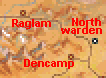
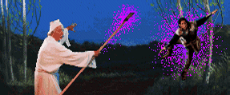
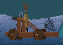

When Rivers Run Blood
| Betrayal at Krondor - Chapter 5 When Rivers Run Blood |  |
|
|
|
|
Perform Duke Martin's Quests | ||||
|
[HOME]
| ||||
|
James, Locklear & Patrus must accept FOUR QUESTS from Duke Martin & perform
them in the right order. Duke Martin is situated close to the fork in the road
south of Chapter START, but first you must go to Northwarden and talk
to Baron Gabot. |
||||
| WALKTHROUGH Chapter 5 |
 |
Despite the number of QUESTS needed to finish this Chapter, you will be
geographically restricted to the Northwarden and Dencamp sectors of Zone 5,
and the Raglam sector of Zone 6 (East). You can NOT go to Wolfram or Kenting
Rush, and the Raglam Bridge can NOT be crossed.
James, Locklear and Patrus shouldn't hesitate spending all their money before
finishing this Chapter. They will only return in Chapter 7, where they're not likely
to need cash.
Now return to where you started, and locate Duke Martin. If you ask him about Baron Gabot,
he will hand out the first Quest. You must locate some Food Chests in the neighborhood, and
poison the Rations. (The Duke can improve your Crossbow Skill. First make sure it is the
ONLY SKILL SELECTED.)
The three Chests (DOOR, OUTSIDE, ONION) are easily found nearby, but are guarded by a Trap.
The Trap is easy: Push the Transparent Crystal in front of Blaster.
The Green Trap Poles will be ruined, and you can walk out between them.
You don't need to poison all the Rations contained in the three Chests. You only need
to leave ONE POISONED RATION in each Chest, which means you can appropriate most of the
Rations for your party! Rations can be poisoned using Coltari Poison, but you won't even
need this, because you can find Poisoned Rations in the Northwarden Sector:
If you walk the South Road towards Kenting Rush, you will soon meet three Moredhel Warriors
and two Goblins [Combat 22]. One of the Moredhel has Poisoned
Rations, but even if he escapes, there are three Bushes nearby, all of them containing
Poisoned Rations! A bit farther South you can fight two Witch Hags and three Moredhel Warriors
[Combat 21]. The Witch Hags don't have any Spells to cast, so they're
totally harmless. Kill the Moredhel first. Then rest and watch the Witch Hags running around
stupidly. Kill them when you get bored.
If you now talk to Duke Martin, and ask him about POISONING, he will hand out the second
Quest: Find Minstrel Tamney, and persuade him to return to Northwarden.
The Minstrel is hiding out in a Barn in Dencamp. So go West. You may run into a group of
two Goblins and three Witch Hags
[Combat 23]. The Hags are harmless, since they don't have any Spells
to cast. Farther West, near a path leading to the Diviner's Halls, you'll have to fight three
Sentinel Ogres and a Witch Hag [Combat 29]. This time the Witch Hag is for
real. Stay away from the Diviner's Halls for the time being. Talk to Thea Halfgate in a House
nearby. If you've performed the Grain Quest, you will already have met her four sisters! Thea
wants to learn Weaponcraft. If you have Weaponcraft Skill of 55% or higher, she will give you a
Medium Crossbow [100].
Minstrel Tamney is hiding inside a barn east of Dencamp. If
your Strength is less than 30, you won't be able to open the Barn Door. Fadamor's Formula
will do the trick. If you don't have this, you can buy it in the
Decamp Shop, but you'll have to fight 3 Moredhel and 2 Sentinel Ogres
[Combat 32], in order to reach the Shop.
Tamney wants you to find his Geomancy Stones, which can only be found in the
DIVINER'S HALLS.
In order to enter the DIVINER'S HALLS you need to navigate a Trap. It is
easy: Push the Transparent Crystal in front of the rightmost Blaster.
The Green Poles will be ruined, and you can exit between them.
Locate Tamney again, and give him the Geomancy Stones. He will reward you with
three Diamonds [100]. Sell each of these in the Dencamp Shop for 1425 Gold. You
may now want to spend a lot of money, but make sure you keep 2000 Gold Sovereigns,
without which you won't be able to finish the Chapter.
Obviously your next step is to report to Duke Martin. But it might be a good idea
to explore the area South of Dencamp first. Fight two Moredhel and two Goblins
[Combat 33], and two Witch Hags, a Moredhel, and a Goblin
[Combat 34]. South of Dencamp, you can find a House close
to a Well. Six Invisible Magicians are hiding out in the House, but they won't reveal
themselves until later. Note the Magical Field surrounding the area, which will cause
5 points of Damage every time you run into it.
Talk to Duke Martin, in order to tell him that Tamney is returning to Northwarden.
Ask him about GOBLINS, and he will give you a new Quest to perform: Go to Raglam and
find the Battle Plans. Go North, but instead of turning East towards Northwarden, turn
West. Soon you will encounter the Goblins. In order to pass into the Northlands, you
will have to pay 2000 Gold Sovereigns. You can fight if you want, but the Combats here
are endless. The nearby Well is Poisoned (55%), so stay away from it.
There are only three Combats in this area. First you'll meet three Rime Giants and
a Rogue "Mage", who doesn't have any Spells to cast [Combat 01].
Closer to Raglam you'll have to combat three Moredhel and two Witch Hags [Combat 02].
Near the Bridge west of Raglam, a group of two Moredhel, a Witch Hag and a Rime Giant awaits you
[Combat 03].

A few steps away from Combat 02, you will see the Catapult. It is guarded by a Trap, which is
much easier than it looks. Make Patrus push the Solid Crystal forward in order to shield Locklear
from the Left Blaster. Now Locklear can push the Transparent Crystal forward, until he has
cleared the Trap. Now inspect the Catapult, and discover that a part is missing.
Investigate Raglam. Kroldech's house is the one where you'll ultimately find the Battle Plans,
but access will be denied. The tone-deaf Engineer, next door to the Tavern, wants Patrus to
play the Lute. In order for Patrus to "succeed", his Barding Skill must be LOWER than 40%. He
will probably have to get drunk at the Tavern in order to achieve this. As soon as he can play
badly enough, the Engineer will let you in on his scheme, and tell you where to find the missing
Catapult Gear.
Go on West, towards the Bridge. Here
you'll find four Chests, two of them trapped, so make sure that SCENT OF SARIG is active.
Time to see Duke Martin again. Ask him about PLANS. He will now hand out the final Quest
of this Chapter, to find and kill the Six Invisible Spellcasters. As mentioned earlier, these
are hiding out in a House south of Dencamp.
This Combat is probably the most difficult you've encountered so far, so don't forget to
SAVE first. If you don't gain the Initiative, it will be even harder! Remember that the
Spellcasters are unable to Cast, if you're standing next to them. Three of the Spellcasters
can Cast GRIEF OF 1000 NIGHTS, so these are probably the ones you should aim for first.
Probably Patrus' first move should be to Cast SKIN OF THE DRAGON on himself, so he
can Cast EVIL SEEK without being immobilized. For detailed information on these formidable
Enemies, consult the relevant COMBAT PAGE in the Map Web.
Once dead they will yield two spells for Patrus: NIGHTFINGERS and WRATH OF
KILLIAN, and the useful INFINITY POOL. Now talk to Duke Martin for one last
time, and then return to Northwarden in order to finish Chapter 5.
 Once in Northwarden talk to Baron Gabot and ask him about Duke Martin. Check out the
Shop as well, and sell any surplus loot. If you don't have any Coltari Poison, you might
want to buy some.
Once in Northwarden talk to Baron Gabot and ask him about Duke Martin. Check out the
Shop as well, and sell any surplus loot. If you don't have any Coltari Poison, you might
want to buy some.

 In the Diviner's Halls you will need to fight two Sentinel Ogres
[Combat 01], and
two Sentinel Ogres and a Highland Ogre [Combat 02],
in order to find the Geomancy Stones. Don't miss the JACKET and SAWDUST Chests
in the same Chamber. You can also fight four Moredhel and two Beasthounds
[Combat 03], and three Moredhel and two Beasthounds
[Combat 06], but these Combats are purely optional.
In the Diviner's Halls you will need to fight two Sentinel Ogres
[Combat 01], and
two Sentinel Ogres and a Highland Ogre [Combat 02],
in order to find the Geomancy Stones. Don't miss the JACKET and SAWDUST Chests
in the same Chamber. You can also fight four Moredhel and two Beasthounds
[Combat 03], and three Moredhel and two Beasthounds
[Combat 06], but these Combats are purely optional.
 The missing Gear is in the northmost Chest (Skill > 54, Damage: 60). Now you can fix the
Catapult, which is aimed at Kroldech's House. Returning to the House, you will find the
Battle Plans, 150 Gold Sovereigns, and the very valuable Sword of Lims-Kragma.
The missing Gear is in the northmost Chest (Skill > 54, Damage: 60). Now you can fix the
Catapult, which is aimed at Kroldech's House. Returning to the House, you will find the
Battle Plans, 150 Gold Sovereigns, and the very valuable Sword of Lims-Kragma.